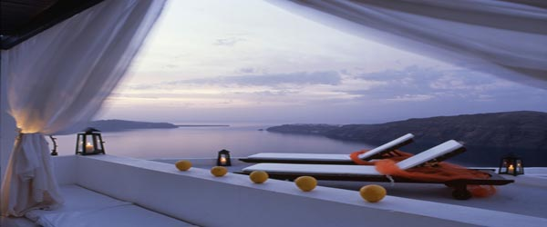
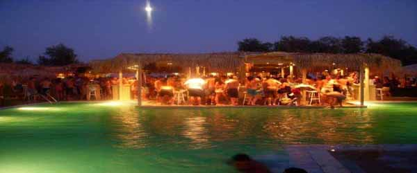
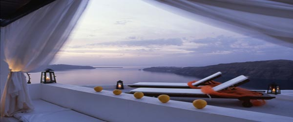
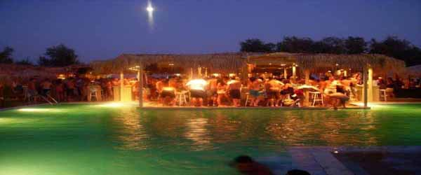

Santorini
 





Information
Santorini is an island in the southern Aegean Sea, about 200 km (120 mi) southeast from Greece's mainland. It is the largest island of a small, circular archipelago which bears the same name and is the remnant of a volcanic caldera. It forms the southernmost member of the Cyclades group of islands, with an area of approximately 73 km2 (28 sq mi) and a 2011 census population of 15,550. The municipality of Santorini comprises the inhabited islands of Santorini and Therasia and the uninhabited islands of Nea Kameni, Palaia Kameni, Aspronisi, and Christiana. The total land area is 90.623 km2 (34.990 sq mi). Santorini is part of the Thira regional unit.
Santorini is essentially what remains after an enormous volcanic explosion that destroyed the earliest settlements on a formerly single island, and created the current geological caldera. A giant central, rectangular lagoon, which measures about 12 by 7 km (7.5 by 4.3 mi), is surrounded by 300 m (980 ft) high, steep cliffs on three sides. The main island slopes downward to the Aegean Sea. On the fourth side, the lagoon is separated from the sea by another much smaller island called Therasia; the lagoon is connected to the sea in two places, in the northwest and southwest. The caldera being 400m deep makes it possible for all but the largest ships to anchor anywhere in the protected bay; there is also a newly built marina in Vlychada on the southwestern coast. The principal port is called Athinias. The capital, Fira, clings to the top of the cliff looking down on the lagoon. The volcanic rocks present from the prior eruptions feature olivine and have a small presence of hornblende